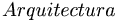
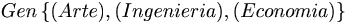
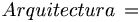
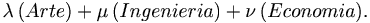
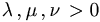
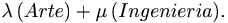
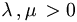
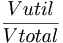

De: La Frikipedia, la enciclopedia extremadamente seria.
De: La Frikipedia, la enciclopedia extremadamente seria. De: La Frikipedia, la enciclopedia extremadamente seria.
Suponiendo conocidas las definiciones de algoritmo y de edificio, podemos definir la Arquitectura como el conjunto de algoritmos que, una vez conocido, permite el diseño de edificios.
La Arquitectura está compuesta por Arte, Ingeniería y Economía, por lo que matemáticamente podemos escribir
 
o bien
 
Nota: es necesario asumir que .
Llegados a este punto, cabe preguntarse <<¿Y por qué la Economía?,¿Eh?>> No sino por lo siguiente:
- Debemos añadir más hormigón, o de lo contrario se derrumbará. - ¿Más hormigón? ¿Pero tú no te has dado cuenta del presupuesto que tenemos? - Oh, cierto. Lo había olvidado. Y el edificio se derrumbó.
La definición anterior es, en efecto, rigurosa. Además, trae consigo las siguientes consecuencias:
Estas consecuencias han sido muy debatidas a lo largo de la Historia, puesto que de alguna manera u otra, tanto el Arte como la Ingeniería están ligados a asuntos económicos. Fue por ello por lo que se decidió, en el siglo XIX, dar una definición ideal de Arquitectura, que fue la siguiente:


Es decir, que la Arquitectura está compuesta únicamente por Arte e Ingeniería, tratándose de un conocimiento de dos dimensiones.
En el año 1874 la guerra estaba comenzando. -¿Quién cojones ha tirado los pilares al río? Ya sabía yo que no se os podría dejar solos en ningún momento. Que venga el jefe de obra. Los trabajadores se miran cabizbajos sin decir nada. Llega el ingeniero. - Nos honras con tu presencia. Ven, alejémonos de este jaleo. Tenemos que hablar. *** - ¿Estás preparado para escuchar lo que tengo que decirte? - Escúpelo ya de una puta vez. El ingeniero toma aire crecíendose. - No estamos levantando tu catedral. Será un puto puente para las tropas carlistas. - ¿Un puente en lugar de mi catedral? Ya estás diciendo a esos albañiles que saquen MIS pilares del río y los pongan como figuraba en MIS planos. - ¿Planos? ¿De qué planos me estás hablando? Oh, esos nunca llegaron a la corte, los vendí. - ¿Cómo has podido vender mi obra a la competencia? ¿Y todo para que los Carlistas marchen por este lugar? Juro que ese puente no será levantado. El ingeniero ríe. - ¿Y qué vas a hacer tú? ¿Matarme? - Por ejemplo. Arreole tal vigazo de hormigón que el ingeniero no pudo incorporarse. - Mira, maldito, tienes suerte de que ésta viga no sea de hormigón armado, y de que por tanto haya fallado por flexión al chocar con tu cabeza. Tu puente no será levantado. Informaré al colegio de tu traición. El arquitecto se marcha, no sin antes volverse. - Lamento que esto haya tenido que terminar así. Tú… si fueras inteligente te habrías dado cuenta de que esta gente necesita algo en lo que creer. El ingeniero termina de arrancarse el diente. - ¿A QUIEH TE CREEH QUE LE VAH A COMPRAR LA HORMIGONERA AHORA? Es así y no de otra manera cómo se inicia la Guerra del Hormigón, que llega hasta nuestros días y parece no tener fin.
En primer lugar, y como ya hemos mencionado, el hombre edifica por motivos de comodidad o por motivos religiosos. Es capaz de estrujarse los sesos para protegerse del frío o para adorar a Dios, y esto es algo que se ha dado en todas las culturas y desde el comienzo del Tiempo.
En segundo lugar, lo que hace el arquitecto es <<darle todo al suelo>>, es decir, mediante una serie de apaños transmite todo el peso al suelo, convirtiéndose éste en el elemento arquitectónico principal. Se piensa por ello que el suelo se trata del elemento insostenible e incausado de la Arquitectura. Este principio es el llamado Principio del Sustentador Absoluto.
Sin embargo, considerando este principio, no se puede decir que sin el suelo no hay Arquitectura, puesto que una catedral puede flotar libremente por el Espacio.
En tercer y último lugar, mencionaremos que los edificos o monumentos modernos han de ajustarse a palancas, concretamente a las de primer género. Obsérvese un ejemplo idealizado en la imagen de la derecha.
Hay veces en las que dudaremos de la función de un elemento arquitectónico. Supongamos, por ejemplo, que estamos en el Partenón y nos topamos con una columna. Si somos curiosos, nos preguntaremos si cumple una función artística o pura y verdaderamente estructural.
Para salir de dudas, basta con volar la columna, teniendo cuidado de que sea ella la única que se vea afectada por la voladura.
Se clasifican a partir de la definición ideal de Arquitectura.
Es necesario introducir en este apartado el concepto de rendimiento de edificio, que se define como el cociente del volumen útil y del volumen total de un edificio.

Obras en las que el arte es más importante que la optimización ingenieril. Su rendimiento de edificio suele ser muy bajo.
Si al simplificar un conjunto de elementos se pierde en arte, entonces tal conjunto no se simplificará. Así que no quites las gárgolas.
El ejemplo más característico lo constituyen los monumentos religiosos, como catedrales o mezquitas.
Obras en las que la optimización ingenieril es más importante que el arte. Su rendimiento de edificio suele ser elevado.
Se simplificará siempre que se pueda. Te sobran las gárgolas.
El ejemplo más característico lo constituyen los edificios de los polígonos industriales.
No obstante, se debe tener en cuenta que aunque el arquitecto no quiera, una obra suya puede considerarse artística, a pesar de haberla simplificado al máximo posible. Un ejemplo sería un edificio con forma de prisma de base triangular. Simplificado, claro está, porque dicho edificio tendría una pared de menos, pero a su vez esa característica chocante puede ser considerada como una forma artística para muchos.
La Trigonometría Astronómica Moderna determinó que no es esta torre la que se ha ido inclinando, sino la relativismo.
El caso es que nuestro planeta sufre una inclinación, que según los astrónomos se debe a un movimiento que adquirió cuando el Imperio Galáctico destruyó Alderaan. Este hecho modificó el equilibrio gravitatorio de los astros, provocando que en la Tierra apareciese el movimiento del que hablamos, que se caracteriza por tener una dirección perpendicular a la de rotación y ser mucho más lento que ésta.
En resumen, el diseño de la Torre de Pisa es perfecto y su "inclinación" es ajena a la Arquitectura.
Autor(es):